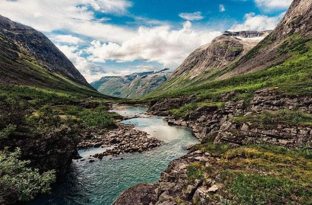
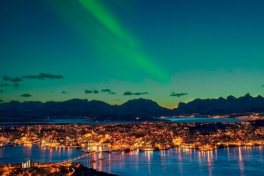
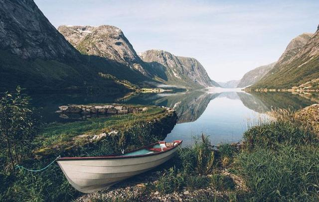
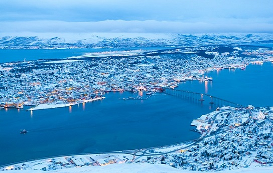
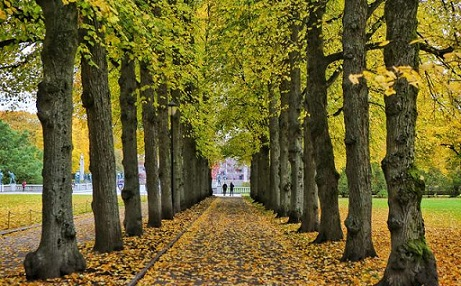

morly旅游网
提起挪威，可能印象中最先出现的词汇就是：森林、维京、三文鱼和极光等等。村上春树的《挪威的森林》，以及伍佰的同名歌曲，让几乎所有的年轻人都知道了挪威。的确，挪威世界上森林覆盖率最高的国家之一，因为极其优美的自然条件，吸引着全世界游客目光。
当然，挪威最不可错过的旅行，就是极光之旅。极光的美丽与众不同在于，极光之美，来自于宇宙。在黑色的夜空，看着绿色如波浪般变化无穷的极光，好像绿色的音符在跳舞，美轮美奂，甚至觉得眨眼都是浪费了这美丽的瞬间。世界上有许多不可思议的景色，极光之旅绝对是其中最不可思议的景色之一。
 挪威标志性景观，提到挪威，人们的脑海会自然而然地浮现出沿着海岸线延绵不绝的峡湾-，它就是挪威最具标志性的景观。不过在这个国家，除了峡湾以外，还有更多不容错过的景色。
国家公园
观察自然栖息地内的野生动物。你可能会看到驯鹿或驼鹿，甚至可能是——希望别离得太近——熊和狼。在你即将冒几天险之前，坐下来喝一杯咖啡吧。他们对自己煮的咖啡充满深情，而且挪威比其他任何国家消费的咖啡都多。无论你是在小城镇还是在大城市，每-个角落和每条街上都有独特而地道的咖啡馆。一边喝着咖啡，一边品尝一下挪威式华夫饼。比利时不是唯一能烘焙出美味华夫饼的国家。如果抵挡不住街边酸奶和果酱的诱惑那就选一个吧。
 挪威首都：奥斯陆
乘坐北欧航班降落在奥斯陆，前几天正是深秋，奥斯陆披上了一层秋天的金色，仿佛童话中世界似的。雕塑公园是最值得去的景点之一，秋天金色的叶子太美了，当然如果冬天去，这里会披上一片银色的外衣，同样是梦幻般的世界。维格兰雕塑公园位于奥斯陆西北角，景区内除了如梦似幻的树林、溪水、繁花似锦的自然风光外，这里最出名的是192座雕塑，总计有695个人物雕像，每个人物的造型都不一样。有趣的是，其中最出名的一座，被称为“愤怒的小孩”，好多人去跟小孩拉手，小孩的手都被“握”成了金色。据说这是世界最大的雕塑公园，因此奥斯陆也被称为雕塑之城。

阿尔塔：极光旅行的开始
阿尔塔市北方著名的旅游城市，白天可以去北极光大教堂参观。除了北极光教堂，可以去萨米的村庄去了解萨米人的生活。萨米人有3—5万人，分别生活在挪威的最北部，其中有一部分人至今还在过着驯鹿的生活，他们饲养驯鹿，用驯鹿皮做衣服和帐篷，而且吃驯鹿肉，这也是当地的名菜。此外，还有一个最好玩的互动体验，就是去二哈驯养基地，体验狗拉雪橇活动。
到了晚上，可以见绿色的极光忽然从树林中跳跃出来布满天空。在阿尔塔，没有特别的地点看极光，北极光大教堂那里看，有前景会很美，适合拍照。当然陆地上最好没有灯光。


北角
北角被认为是欧洲大陆的极北点，北纬71度。我们住在的地方时霍宁斯沃格，距离北角还有40公里。霍宁斯沃格是一个非常安静漂亮的小城，也是非常富裕的地方，因为盛产北海的海鲜。由于海水冰冷，所以鱼长得很大，鱼肉鲜美，尤其是三文鱼，被认为是世界最顶级的三文鱼。


内容整理至网络，如有侵权，请联系我们！1255394075@qq.com